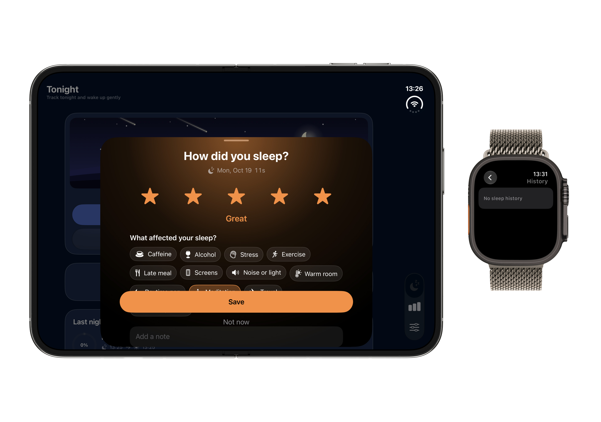
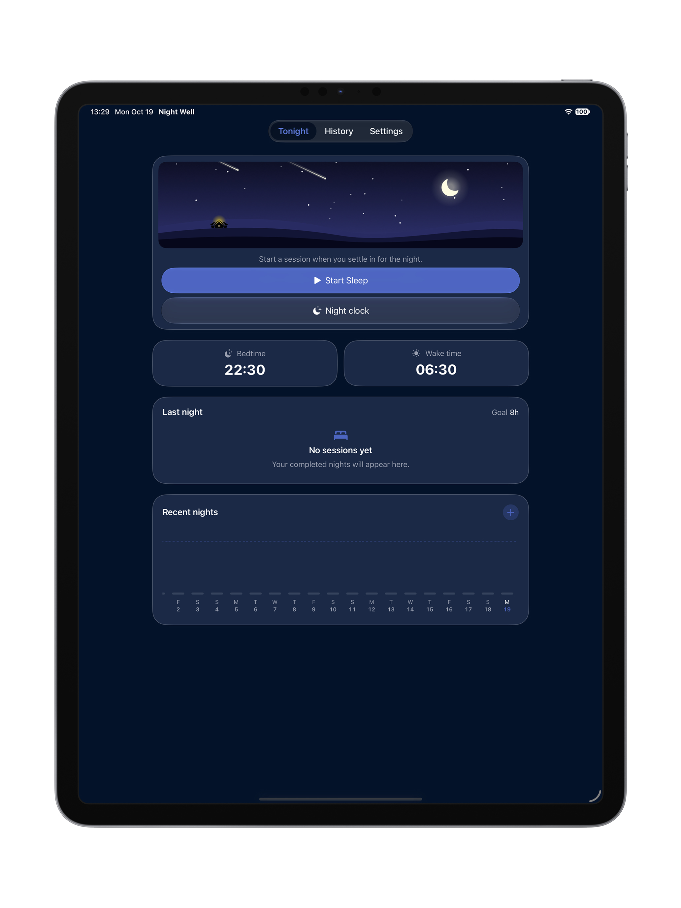
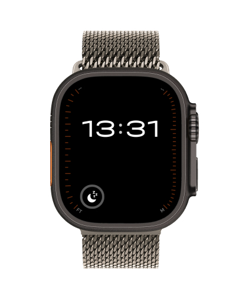
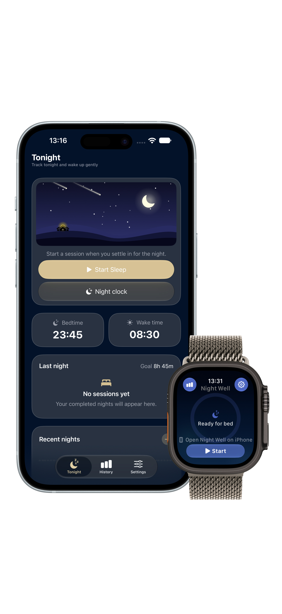
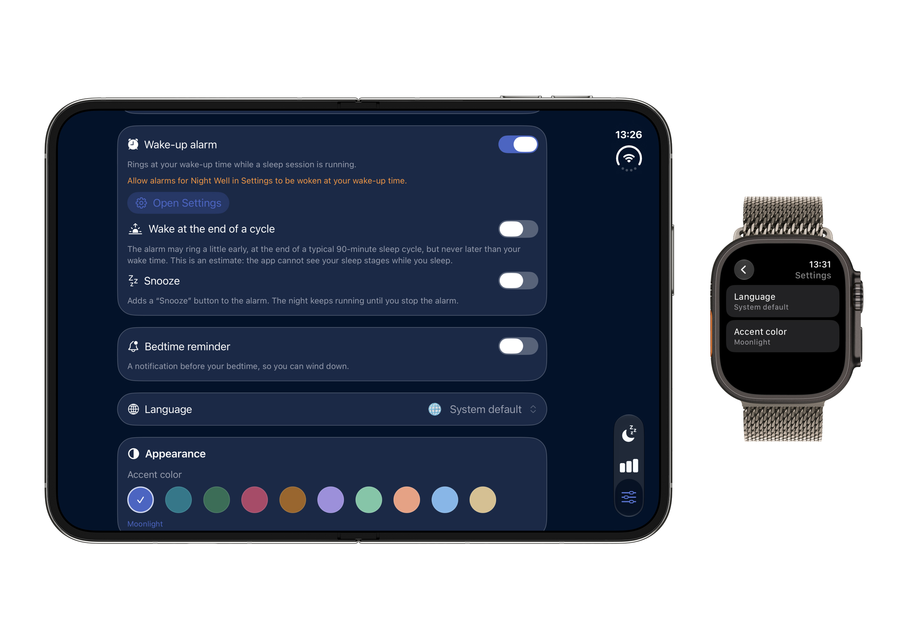
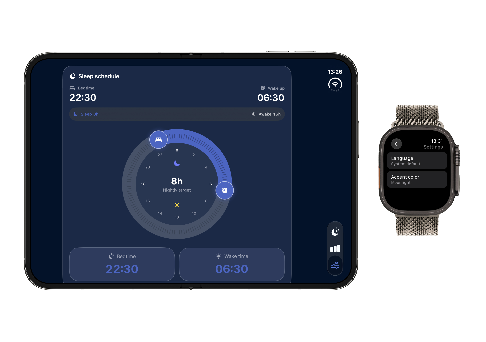

- D1 Tonight & Schedule Duo iPhone + Watch
- D2 Soundscapes Selection iPhone + Watch
- D3 Smart Wake-Up Window iPhone + Watch
- D4 Sleep Analytics Dashboard iPhone + Watch
- D5 Morning Rating & Factors iPhone + Watch
- D6 Sleep Score Breakdown iPhone + Watch
- P1 iPad Large Screen Dashboard iPad Landscape
- W1 Apple Watch Night Clock watchOS Complication
- M1 Standalone iPhone Night Clock iPhone Display
A calm sleep tracker built around a rhythm you choose.
Nightwell helps you sleep on your own schedule without noise, subscriptions traps, or intrusive accounts. Set your bedtime and wake time, press one button when you go to sleep and see the night take shape. In the morning rate how you slept and track what affected it: coffee, stress, exercise, a late meal or room temperature.
Built by Hakob Ghlijyan, an independent iOS developer based in Yerevan, Armenia. Nightwell is crafted natively with Swift and SwiftUI, honoring Apple design principles and respecting user privacy at every touchpoint.
How can we help?
Contact Support Directly
Write to {{SUPPORT_EMAIL}} with subject "Nightwell support".
Please include: device model, iOS/watchOS version, app version (found in Settings → About), and steps to reproduce.
Getting Started (4 Steps)
1. Set your bedtime and wake time in Settings.
2. Tap "Start sleep" on the Tonight tab.
3. In the morning, finish sleep or stop the alarm.
4. Rate how you slept and mark what affected your rest.
Frequently Asked Questions
What devices and software do I need?
The alarm did not ring. What should I check?
What is the early wake-up window?
How does iCloud synchronization work?
How is Apple Health data used?
How can I export or delete my data?
Is Nightwell a medical device?
Nightwell is a sleep tracker and not a medical device. Requirements: iOS 26.1 / watchOS 26.1 or later.
We do not collect your personal data.
Last updated: {{LAST_UPDATED}}
1. Summary: We do not collect your personal data. No accounts, no advertising, no tracking, and no third-party analytics SDKs. Your data stays on your devices and in your own private iCloud.
2. Who we are: Hakob Ghlijyan, independent developer based in Yerevan, Armenia. Contact: {{SUPPORT_EMAIL}}.
3. What the app stores on device: Sleep sessions (start and end times), ratings, optional factors (e.g. coffee, exercise, stress), settings (bedtime, wake time, alarms), and local cache for widgets and Apple Watch.
4. iCloud: Data syncs solely through your personal iCloud container (CloudKit). The developer cannot access or view your records.
5. Apple Health: Writing finished nights to Health is optional. Reading sleep stages from Apple Watch is read-only, on-demand, shown on screen, and never stored, synced, or monetized.
6. Permissions: Alarms (AlarmKit to ring even on silent), Notifications (bedtime reminders), Health (optional). No location, contacts, camera, or advertising identifier are ever accessed.
7. What we do not do: No sale of data, no tracking, no behavioral profiling, no marketing SDKs, and no third-party trackers.
8. Diagnostic logs: Only local system logs in case of crashes. No health data or personal notes are included.
9. Data export and deletion: Export anytime as CSV or JSON in app Settings. Delete all records via iOS iCloud settings.
10. Children: The app does not collect personal data from anyone, including children.
11. Security: Guarded by Apple device encryption and iCloud security architectures. The app runs without external servers.
12. Contact: If you have privacy questions, write to {{SUPPORT_EMAIL}}.









